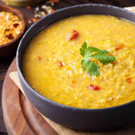

Daal

Back
The Ingredients
- Lentils (any variety)
- Onion
- Tomatoes
- Ginger-garlic paste
- Green chilies
- Spices: turmeric, cumin, coriander, red chili powder
- Ghee or oil
- Fresh coriander leaves (cilantro)
Steps
- Cook lentils until soft. Keep aside.
- Sauté onions, add ginger-garlic paste, tomatoes, and spices.
- Add cooked lentils and simmer until flavors combine.
- Prepare tempering in ghee/oil and pour over the daal.
-
Garnish with fresh coriander leaves and serve hot with rice or bread.